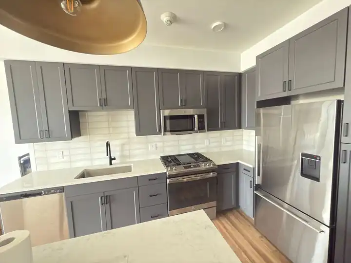
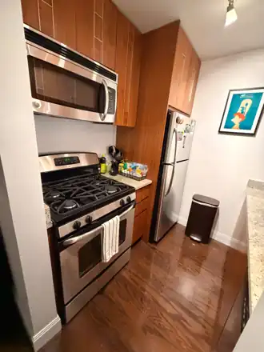
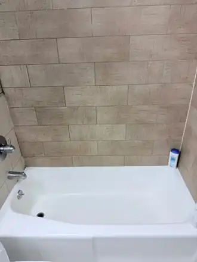
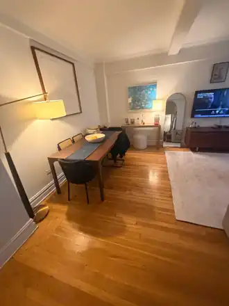

House Cleaning in Bay Ridge
House and apartment cleaning in Bay Ridge, from the co-ops along Shore Road to the row houses off Third Avenue. Our Brooklyn team is close by, so we can often come the next day.

Recent work by our team
Photos from real Clean Cleaners NYC jobs. No stock photos.



Arturo and his team were professional, punctual, and thorough from start to finish. They left the apartment sparkling clean, paying careful attention to the details. I'd gladly hire them again and recommend their cleaning service to anyone looking for reliable, high-quality work.
Cleaning made for Bay Ridge homes
Bay Ridge mixes prewar co-op buildings, two family row houses and walk-up apartments. Older buildings mean original wood trim, radiators and tiled bathrooms that need careful hands, not harsh scrubbing.
We carry all supplies up the stairs and protect older floors and trim while we work.
Cleaning in Bay Ridge: your questions
How much is house cleaning in Bay Ridge?
Home cleaning starts at $199 + tax and deep cleaning starts at $250 + tax. Starting prices are based on a 1 bedroom, 1 bathroom apartment. A deposit is required to hold your date.
Do you clean two family houses in Bay Ridge?
Yes. We can clean one unit or both. Tell us the bedrooms and bathrooms of each unit when you book.
Do I need to provide supplies?
No. We bring all supplies and professional products.
What if I am not happy?
Tell us within 24 hours and we come back for a free re-clean within 24 to 48 hours.
Save 10% on local moves and 5% on long distance with our partner Piece of Cake Moving. Use code CLEAN20.
Ready for a spotless home in Bay Ridge?
CALL US TODAY FOR A CLEANING TOMORROW!